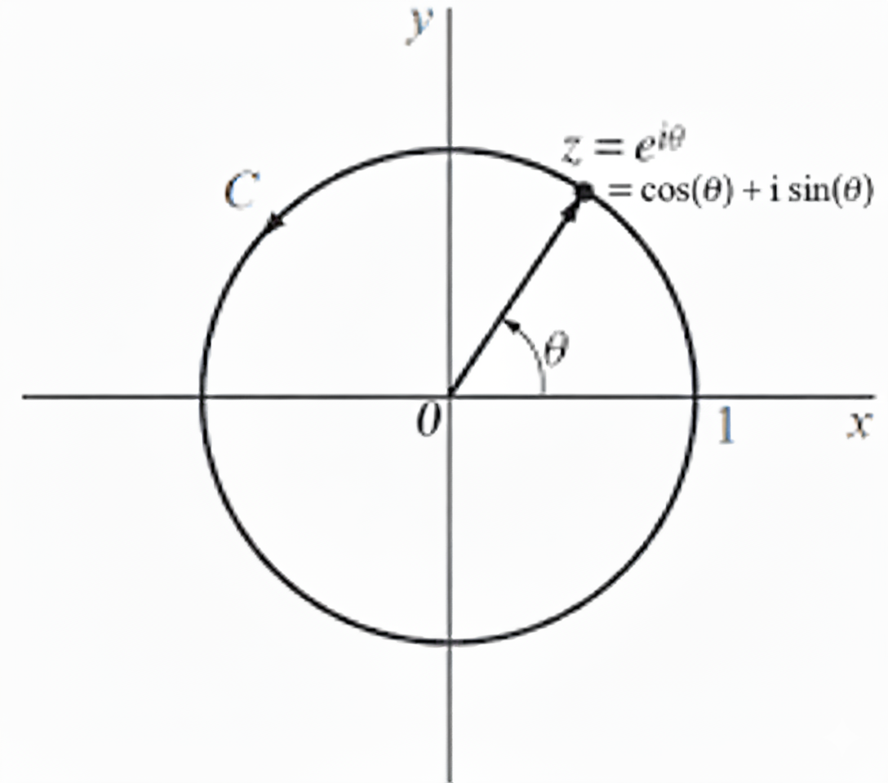

The CLT
The Central Limit Theorem (CLT) answers an important question: Why does the bell curve (or Normal Distribution) show up everywhere in the real world?

Specifically, if we take any random variable \(X\) (like the outcome of a weird, lopsided die), and we repeat the experiment \(m\) times to get independent results \(X_1, X_2, \dots, X_m\), what does the probability distribution of their sum, \(S_m = X_1 + \dots + X_m\), look like when \(m\) is very large?
The CLT states that the probability distribution of this \(S_m\) will always look like a perfect bell curve, no matter how strange the original die was (as long as it has a well-defined average and spread). This derivation is a mathematical journey to see exactly why this universal shape magically appears.
Encoding Probabilities (The PGF)
First, we need a way to mathematically describe our single die. We’ll package its probabilities into a special polynomial called a Probability Generating Function (PGF). This isn’t just a convenient trick; it’s a cornerstone of combinatorics for solving counting problems.
A gentler start: probabilities as polynomials
Imagine you want to count the number of ways to form 10 Rupees using a collection of 1, 2, and 5 Rupee coins. This is a classic combinatorial problem. A powerful way to solve it is to represent the available coins as polynomials:
- 1 Rupee Coins: \((1 + x^1 + x^2 + \dots)\)
- 2 Rupee Coins: \((1 + x^2 + x^4 + \dots)\)
- 5 Rupee Coins: \((1 + x^5 + x^{10} + \dots)\)
When you multiply these polynomials, voila! The coefficient of \(x^{10}\) in the final product gives you the exact number of ways to make change for 10 Rupees.
Why does this work? The exponents add, just like the coin values do. The polynomial multiplication automatically explores every single combination of choices for you.
A PGF does the exact same thing, but for probabilities. For a discrete random variable \(X\) that takes integer values with probabilities \(p_k=\Pr(X=k)\), we define: \[H(z)=\sum_k p_k\,z^k.\]
Why is this natural?
- Labels, not powers: The exponent \(k\) is just a label for the outcome \(X=k\). The polynomial is a fancy storage system where the coefficient of \(z^k\) holds the probability of the outcome \(k\).
- Convolution by multiplication: This is the killer feature. If \(X\) and \(Y\) are independent, the probability that \(X+Y=n\) is found by summing over all pairs of outcomes that add to \(n\): \(\sum_k \Pr(X=k)\Pr(Y=n-k)\). This operation is called a convolution. When you multiply the PGFs \(H_X(z)\) and \(H_Y(z)\), the rule for multiplying polynomials does exactly the same calculation. The coefficient of \(z^n\) in the product is precisely that sum! So, for sums of independent variables, the PGF of the sum is the product of the PGFs: \[H_{X+Y}(z)=H_X(z)\,H_Y(z).\]
- From coins to dice: For a biased coin where heads=1 and tails=0, with \(\Pr(1)=p\), the PGF is \(H(z) = (1-p)z^0 + pz^1\). For two flips, the PGF is \(H(z)^2 = (1-p)^2 + 2p(1-p)z^1 + p^2z^2\). The coefficients are the binomial probabilities! This idea scales perfectly to dice or any other discrete distribution.
For distributions that can take negative integer values, the PGF becomes a Laurent series with negative powers, like \(H(z) = \sum_{k=-\infty}^{\infty} p_k z^k\). All the logic, including the convolution property and the Cauchy integral extractor, works exactly the same!
For a standard fair die, the outcomes are \(\{1, 2, 3, 4, 5, 6\}\), each with probability \(\tfrac{1}{6}\). The blueprint function is: \[ h(z) = \frac{1}{6}z^1 + \frac{1}{6}z^2 + \frac{1}{6}z^3 + \frac{1}{6}z^4 + \frac{1}{6}z^5 + \frac{1}{6}z^6 \]
The Magic of Multiplication
Here’s where the magic happens. What if we want the probabilities for the sum of two dice? We simply multiply the blueprint by itself: \(h(z)^2\).
Why does this work? Consider getting a total of 3. This can happen as (1+2) or (2+1). When we multiply out \(h(z) \times h(z)\), the math automatically finds every combination that produces a \(z^3\) term: \[ \underbrace{\left(\tfrac{1}{6}z^1\right) \times \left(\tfrac{1}{6}z^2\right)}_{\text{Roll 1, then 2}} + \underbrace{\left(\tfrac{1}{6}z^2\right) \times \left(\tfrac{1}{6}z^1\right)}_{\text{Roll 2, then 1}} = \frac{2}{36}z^3 \]
The math does all the tedious bookkeeping for us! The coefficient \(\tfrac{2}{36}\) is exactly the correct probability for the sum being 3.
This powerful idea is our starting point: To find the probability that the sum of \(m\) rolls is \(n\), we just need to find the coefficient of the \(z^n\) term in the expansion of \(h(z)^m\). We write this as \([z^n]h(z)^m\).
A worked example (three dice)
Let \(h(z)=\tfrac{1}{6}(z+z^2+z^3+z^4+z^5+z^6)\). For three dice, \[ [z^9]h(z)^3 = \sum_{a+b+c=9} \tfrac{1}{6^3}\,1 = \frac{10}{216}, \] where the \(10\) solutions \((a,b,c)\in\{1,\dots,6\}^3\) with \(a+b+c=9\) are counted by simple stars-and-bars with bounds (or by direct enumeration). This matches the usual table of sums for three dice.
Notation: the coefficient operator
For a formal power series \(F(z)=\sum_n c_n z^n\), the extractor is \[[z^n]F(z)=c_n.\] When \(F\) is analytic on and inside a circle \(\gamma\), Cauchy’s formula gives an integral representation of this operator (next section).
The “Coefficient Extractor” Machine
Why do we need an extractor?
For a small number of dice, say \(m=3\), we could grit our teeth and manually expand the polynomial \(h(z)^3\) to find the probability of any given sum. But for \(m=100\), this is impossible. The polynomial would have hundreds of terms, and we only care about one of them! We need a surgical tool, a mathematical machine that can reach into the enormous expansion of \(h(z)^m\) and pull out just the single coefficient we need, \([z^n]h(z)^m\), without doing the whole expansion.
How to Isolate a Coefficient (The Residue Trick)
Let’s think about a general polynomial \(P(z) = c_0 + c_1 z + c_2 z^2 + \dots\). How could we isolate, say, \(c_n\)?
A brilliant trick from complex analysis involves division. If we divide \(P(z)\) by \(z^{n+1}\), we get: \[ \frac{P(z)}{z^{n+1}} = \frac{c_0}{z^{n+1}} + \frac{c_1}{z^n} + \dots + \frac{c_n}{z} + c_{n+1} + c_{n+2}z + \dots \] Look at that! The coefficient we want, \(c_n\), is now attached to the \(\frac{1}{z}\) term. This special term has a name: it’s the residue of the function at \(z=0\).
This is where the magic happens. The Cauchy’s Residue Theorem provides our extractor machine. It states that if you integrate a complex function around a closed loop, the result is exactly \(2\pi i\) times the sum of the residues of the poles inside that loop. In our case, with the pole at \(z=0\), we get: \[ \oint_\gamma \frac{P(z)}{z^{n+1}} dz = 2\pi i \cdot (\text{residue at } z=0) = 2\pi i \cdot c_n \] Rearranging this gives us our formula! This is a specialized version known as Cauchy’s integral formula for coefficients: \[ c_n = [z^n]P(z) = \frac{1}{2\pi i} \oint_\gamma \frac{P(z)}{z^{n+1}} dz \] This is our perfect machine. It works even if \(P(z)\) is a Laurent series with negative powers, allowing us to handle random variables with both positive and negative outcomes. We can now find any coefficient just by performing an integral, completely bypassing the nightmarish polynomial expansion.
The Machine in Action (and a Surprising Transformation!)
Let’s use the simplest and most convenient loop: the unit circle, parametrized by \(z = e^{i\theta}\) for \(\theta \in [-\pi, \pi]\). Let’s see what happens to our formula.

- The function is \(f(z) = h(z)^m\).
- The differential is \(dz = i e^{i\theta} d\theta\).
- The denominator is \(z^{n+1} = (e^{i\theta})^{n+1} = e^{i(n+1)\theta}\).
Plugging these in, we get: \[ \Pr(S_m=n) = \frac{1}{2\pi i} \int_{-\pi}^{\pi} \frac{h(e^{i\theta})^m}{e^{i(n+1)\theta}} (i e^{i\theta} d\theta) \] The \(i\) in the numerator cancels the \(i\) in the denominator. The \(e^{i\theta}\) from \(dz\) cancels one power in the denominator, changing \(e^{i(n+1)\theta}\) to \(e^{in\theta}\). The expression simplifies to: \[ \Pr(S_m=n) = \frac{1}{2\pi} \int_{-\pi}^{\pi} h(e^{i\theta})^m e^{-in\theta} d\theta \] Wait a minute… that’s amazing! This is exactly the formula for the \(n\)-th coefficient of a Fourier series!
The Deep Connection: Power Series and Fourier Series
Why did this happen? This is not a coincidence, it’s one of the most beautiful and profound connections in mathematics. It’s about changing your point of view.
- A Power Series (like our PGF) is built on a basis of monomials: \(\{1, z, z^2, z^3, \dots\}\). These are simple algebraic objects.
- A Fourier Series is built on a basis of complex exponentials: \(\{\dots, e^{-2i\theta}, e^{-i\theta}, 1, e^{i\theta}, e^{2i\theta}, \dots\}\). These are functions of pure oscillation.
When we evaluate our PGF on the unit circle by setting \(z=e^{i\theta}\), we are literally swapping out the algebraic basis for the oscillation basis. The power \(z^k\) becomes the pure frequency \(e^{ik\theta}\).
The integral in Cauchy’s formula is a machine for extracting coefficients by averaging over a circular path. The integral in Fourier analysis is a machine for extracting coefficients by correlating with a specific frequency (projecting onto a basis function). It turns out they are the same machine! The act of choosing the unit circle as our path in the complex plane forces the coefficient-extractor to behave just like a Fourier component-extractor.
The PGF is the natural tool from the world of combinatorics and algebra. The Fourier series is the natural tool from the world of waves, signals, and harmonic analysis. The Central Limit Theorem lives at the intersection of these two worlds, and the unit circle is the portal between them. This is why the Fourier transform emerging here isn’t just natural, it’s inevitable.
Analyzing the Integral with a Taylor Series
This integral is exact, but to solve it, we must approximate it for large \(m\).
The “Characteristic Function” Appears Out of Nowhere!
A natural question is: why not expand \(h(e^{i\theta})^m\) directly? A function raised to a large power \(m\) is mathematically very difficult to handle. The standard and most powerful technique is to first analyze its logarithm. This clever step turns the difficult power \(m\) into a simple multiplier.
So let’s look closely at the thing we’re taking the log of: \(h(e^{i\theta})\). What is it, really? Let’s write it out from its definition: \[ h(e^{i\theta}) = \sum_k \Pr(X=k) e^{ik\theta} \] This is a sum where each possible outcome’s complex exponential \(e^{ik\theta}\) is weighted by its probability. This is just the expected value of the complex random variable \(e^{i\theta X}\)! \[ h(e^{i\theta}) = \mathbb{E}[e^{i\theta X}] \] This object is so important in probability theory that it has its own name: the Characteristic Function, denoted \(\varphi_X(\theta)\).
This is a key moment. In many academic books, the characteristic function is introduced on page one like a rabbit pulled from a hat, leaving you wondering where it came from. But here, it hasn’t been pulled from a hat at all! It has emerged completely naturally. We started with the intuitive idea of a PGF for counting. We then used a powerful complex analysis machine to extract a coefficient. By running that machine on the unit circle, the PGF automatically transformed itself into the characteristic function. It’s the Fourier transform of the probability distribution, and it appears because we chose a Fourier-like method to solve our problem. Amazing!
So, we define \(g(\theta) = \log \varphi_X(\theta) = \log h(e^{i\theta})\). Our integrand’s exponent is now \(m\, g(\theta) - in\theta\).
The Taylor Series and Cumulants
The Taylor series of \(g(\theta) = \log \mathbb{E}[e^{i\theta X}]\) is special because its coefficients define the cumulants (\(\kappa_j\)) of our distribution. The general formula for the \(j\)-th cumulant is given by the \(j\)-th derivative of the log-generating function evaluated at the origin:
\[ \kappa_j = \frac{1}{i^j} \left. \frac{d^j}{d\theta^j} \, g(\theta) \right|_{\theta=0}. \]
These cumulants are the distribution’s fundamental properties:
- \(\kappa_1 = \mu\) (the mean)
- \(\kappa_2 = \sigma^2\) (the variance)
- \(\kappa_3 = \mathbb{E}[(X-\mu)^3]\) (the third central moment, a measure of skewness)
- \(\kappa_4 = \mathbb{E}[(X-\mu)^4] - 3(\sigma^2)^2\) (related to kurtosis)
The Taylor series of \(g(\theta)\) around \(\theta=0\) (assuming the corresponding moments exist) is therefore:
\[ g(\theta) = i\mu\,\theta - \frac{\sigma^2}{2}\,\theta^2 - i\,\frac{\kappa_3}{6}\,\theta^3 + \frac{\kappa_4}{24}\,\theta^4 + O(\theta^5). \]
The Bell Curve Emerges
Setting the Stage
Now we put our Taylor series approximation back into the integral for \(\Pr(S_m=n)\). The exponent in our integral, \(m\, g(\theta) - in\theta\), becomes: \[ m\left(i\mu\,\theta - \frac{\sigma^2}{2}\,\theta^2 - i\frac{\kappa_3}{6}\,\theta^3 + \frac{\kappa_4}{24}\,\theta^4 + \dots\right) - in\theta. \] This still looks like a mess. The key insight is that for large \(m\), the sum \(S_m\) will almost certainly be very close to its expected value, \(m\mu\). We are interested in the shape of the distribution around this mean. The question “what does the distribution of the sum look like?” is really “what does the distribution of deviations from the mean look like?”
To formalize this, we need a new coordinate system that is centered at the mean and scaled appropriately. The mean of the sum \(S_m\) is \(m\mu\), and its variance is \(m\sigma^2\), making its standard deviation \(\sigma\sqrt{m}\). It is natural to measure deviations in units of this standard deviation.
So, we define a new variable \(x\) that does exactly this: \[ n = m\mu + x\sigma\sqrt{m} \] Here, \(x\) is our new coordinate, representing the number of standard deviations from the mean. An \(x\) value of 0 is the mean, \(x=1\) is one standard deviation above the mean, and so on. This change of variables is not just a trick; it is the fundamental act of standardizing the random variable so we can compare the shapes of distributions that have different means and variances.
Let’s substitute this into our exponent: \[ m\left(i\mu\,\theta - \frac{\sigma^2}{2}\,\theta^2 - \dots\right) - i(m\mu + x\sigma\sqrt{m})\theta \] Distributing the last term gives: \[ (im\mu\theta - m\frac{\sigma^2}{2}\theta^2 - \dots) - im\mu\theta - ix\sigma\sqrt{m}\theta \] Look! The main term involving the mean, \(im\mu\theta\), cancels out perfectly! This is no accident; this is why we centered our coordinate system at the mean. The purpose of this step was to eliminate the distracting shifting effect of the mean so we could focus purely on the shape of the distribution. The exponent becomes: \[ -m\frac{\sigma^2}{2}\theta^2 - ix\sigma\sqrt{m}\theta - m\left(i\frac{\kappa_3}{6}\theta^3 + \dots\right) \]
The Mathematical Microscope
The expression is still complicated. But we know that for large \(m\), the probability distribution for \(S_m\) gets wider. The Taylor series for \(g(\theta)\) is only accurate for small \(\theta\). The brilliant next step is to realize these two effects must balance. We need a change of variables that zooms in on the origin \(\theta=0\) at just the right rate to keep the picture stable.
This zoom level is \(\theta = u/\sqrt{m}\). Let’s see why it’s perfect by examining each term in the exponent:
The Variance Term: \[ -m\frac{\sigma^2}{2}\theta^2 \quad \longrightarrow \quad -m\frac{\sigma^2}{2}\left(\frac{u}{\sqrt{m}}\right)^2 = -m\frac{\sigma^2}{2}\frac{u^2}{m} = -\frac{\sigma^2}{2}u^2 \] The \(m\) vanishes completely! This term becomes independent of \(m\), forming the stable, universal core of our bell curve. This is the main event.
The \(x\) Term (from centering): \[ -ix\sigma\sqrt{m}\theta \quad \longrightarrow \quad -ix\sigma\sqrt{m}\left(\frac{u}{\sqrt{m}}\right) = -ix\sigma u \] This term is also stable and independent of \(m\). It controls the position under the bell curve.
The Skewness Term (\(\kappa_3\)): \[ -m\left(i\frac{\kappa_3}{6}\theta^3\right) \quad \longrightarrow \quad -mi\frac{\kappa_3}{6}\left(\frac{u}{\sqrt{m}}\right)^3 = -mi\frac{\kappa_3}{6}\frac{u^3}{m^{3/2}} = -i\frac{\kappa_3 u^3}{6\sqrt{m}} \] This term has a \(\sqrt{m}\) in the denominator, so it vanishes as \(m \to \infty\)!
The Kurtosis Term (\(\kappa_4\)): \[ m\left(\frac{\kappa_4}{24}\theta^4\right) \quad \longrightarrow \quad m\frac{\kappa_4}{24}\left(\frac{u}{\sqrt{m}}\right)^4 = \frac{\kappa_4 u^4}{24 m} \] This is smaller, of order \(m^{-1}\), and contributes to higher-order accuracy (e.g., beyond the first Edgeworth correction).
Higher-Order Terms: All subsequent terms will have even higher powers of \(\sqrt{m}\) in the denominator (\(m, m^{3/2}, \dots\)), so they will disappear even faster.
Our once-horrible exponent simplifies beautifully: \[ \text{Exponent} = \underbrace{-\frac{\sigma^2}{2}u^2 - ix\sigma u}_{\text{The stable Bell Curve shape}} \; - \; \frac{i\kappa_3 u^3}{6\sqrt{m}} \; + \; \frac{\kappa_4 u^4}{24 m} \; + \; O\!\left(m^{-3/2}\right) \] As \(m \to \infty\), all the terms that depend on the specific, unique features of our original die (skewness, kurtosis, etc.) are washed away. Only the universal terms related to the mean and variance survive. This is the heart of the CLT’s universality!
Our integral for the probability becomes: \[ \Pr(S_m=n) \approx \frac{1}{2\pi} \int \exp\left(-\frac{\sigma^2 u^2}{2} - ix\sigma u\right) (du/\sqrt{m}) \] The change of variables \(d\theta = du/\sqrt{m}\) introduces the \(\frac{1}{\sqrt{m}}\) factor. The integral is now over \(u\). Since the integrand shrinks to zero incredibly fast for large \(u\), we can extend the limits of integration from \([-\pi\sqrt{m}, \pi\sqrt{m}]\) to \([-\infty, \infty]\) with negligible error. \[ \Pr(S_m=n) \approx \frac{1}{2\pi\sqrt{m}} \int_{-\infty}^{\infty} \exp\!\left(-\frac{\sigma^2 u^2}{2} - ix\sigma u\right) \, du. \]
Evaluating the Gaussian Integral and Finding the PDF
This is a standard Gaussian integral. We can solve it by completing the square in the exponent: \[ -\frac{\sigma^2 u^2}{2} - ix\sigma u = -\frac{\sigma^2}{2}\left(u^2 + \frac{2ix}{\sigma}u\right) = -\frac{\sigma^2}{2}\left(\left(u + \frac{ix}{\sigma}\right)^2 - \left(\frac{ix}{\sigma}\right)^2\right) = -\frac{\sigma^2}{2}\left(u + \frac{ix}{\sigma}\right)^2 - \frac{x^2}{2} \] The integral becomes: \[ \int_{-\infty}^{\infty} e^{-\frac{\sigma^2}{2}(u + ix/\sigma)^2 - x^2/2} du = e^{-x^2/2} \int_{-\infty}^{\infty} e^{-\frac{\sigma^2}{2}(u + ix/\sigma)^2} du \] The integral \(\int e^{-a(t+b)^2}dt\) over the real line is \(\sqrt{\pi/a}\), regardless of the shift \(b\) (which can be proven by shifting the contour in the complex plane). Here, \(a=\sigma^2/2\), so the integral evaluates to \(\sqrt{2\pi/\sigma^2}\). Plugging this back in: \[ \Pr(S_m=n) \approx \frac{1}{2\pi\sqrt{m}} \cdot \sqrt{\frac{2\pi}{\sigma^2}} e^{-x^2/2} = \frac{1}{\sigma\sqrt{2\pi m}} e^{-x^2/2}. \] This is the Local Limit Theorem. It gives the probability of a single outcome. But what does it represent? Let’s rearrange it. The quantity \(1/(\sigma\sqrt{m})\) is the spacing between possible values of our standardized variable \(x\). Let’s call this spacing \(\Delta x\). Then \[ \Pr(S_m=n) \approx \frac{1}{\sqrt{2\pi}} e^{-x^2/2} \cdot \frac{1}{\sigma\sqrt{m}} = \frac{1}{\sqrt{2\pi}} e^{-x^2/2} \Delta x. \] This is beautiful! It says that the probability of landing in a small interval of width \(\Delta x\) around the value \(x\) is approximately the height of a curve, \(\frac{1}{\sqrt{2\pi}} e^{-x^2/2}\), times the width of the interval. This is the definition of a probability density function!
As \(m\to\infty\), the discrete steps \(\Delta x\) become infinitesimally small, and the approximation becomes exact. We have just derived the probability density function (PDF) of the standardized normal distribution: \[ f(x) = \frac{1}{\sqrt{2\pi}} e^{-x^2/2} \] The mean and variance of the original distribution are hidden in here. The mean \(\mu\) was removed when we centered our variable \(x\). The variance \(\sigma^2\) was scaled away to give this universal shape. This shows that any sum of i.i.d. variables, when recentered and rescaled, will converge to this exact same shape.
A Sharper Approximation: The Edgeworth Correction
What if we keep the next term in the exponent? \[ e^{\text{Exponent}} \approx e^{-\frac{\sigma^2 u^2}{2} - ix\sigma u} \cdot e^{-i\frac{\kappa_3 u^3}{6\sqrt{m}}} \] For large \(m\), the argument of the second exponential is small, so we can use the approximation \(e^y \approx 1+y\): \[ e^{-\frac{\sigma^2 u^2}{2} - ix\sigma u} \left(1 - i\frac{\kappa_3 u^3}{6\sqrt{m}}\right) \] Integrating this gives the main Gaussian term plus a correction term involving the integral of \(u^3\) against the Gaussian. The result is the first-order Edgeworth series expansion: \[ \Pr(S_m=n) \approx \frac{1}{\sigma\sqrt{2\pi m}} e^{-x^2/2} \left[1 + \frac{\kappa_3}{6\,\sigma^3\,\sqrt{m}}(x^3-3x)\right]. \] This correction term accounts for the skewness (\(\kappa_3\)) of the original distribution, and it’s our first hint of how the sum approaches the bell curve, along with the shape of the errors in the approximation.
Beyond integer-valued variables (real-valued \(X\))
So far, our random variable \(X\) could only take integer values. What if it’s a continuous variable that can take any real value? We can cleverly handle this by thinking of a continuous value as a limit of finely-grained discrete values.
Let’s imagine a continuous random variable \(X\) with some probability density function. We can approximate it with a discrete variable \(X_N\) that takes values on a fine grid with spacing \(1/N\): \(k/N\) for integers \(k\). The probability that \(X_N\) takes the value \(k/N\) would be approximately the density of \(X\) at that point times the spacing: \(\Pr(X_N = k/N) \approx f(k/N) \cdot (1/N)\).
Now, we can build a PGF for this discretized variable \(X_N\). But the powers will be fractions, like \(z^{k/N}\). This looks strange, but we can make it familiar with a simple substitution. Let a new variable be \(\zeta = z^{1/N}\). Then our PGF becomes a normal polynomial (or Laurent series) in \(\zeta\): \[ H_N(\zeta) = \sum_k \Pr(X_N = k/N) \zeta^k \] This is amazing! We’ve transformed the continuous problem back into the discrete integer problem we just solved. We can now use our entire machinery on this new PGF.
The sum of \(m\) such independent variables, \(S_m = X_{N,1} + \dots + X_{N,m}\), will have a PGF of \(H_N(\zeta)^m\). The probability that this sum equals a certain value, say \(n/N\), is given by the coefficient of \(\zeta^n\): \[ \Pr(S_m = n/N) = [\zeta^n]H_N(\zeta)^m \] We can run this through our whole derivation. The mean and variance of \(X_N\) will be approximately the mean and variance of \(X\), and as we take the limit \(N \to \infty\), they will become exact. The final result for the probability will look just like our Local Limit Theorem, but for the variable \(\zeta\).
When we translate back, we find that the probability density function of the sum \(S_m\) converges to the same bell curve shape. The key insight is that the underlying logic—convolution becoming multiplication, logarithms linearizing powers, and the dominance of the quadratic term in the Taylor series—is completely independent of whether the original variable was discrete or continuous. By discretizing, we can see that the same universal force is at play. The passage to the continuous case is just a matter of taking the limit as our grid becomes infinitely fine. This confirms that the CLT is a truly universal law of probability.